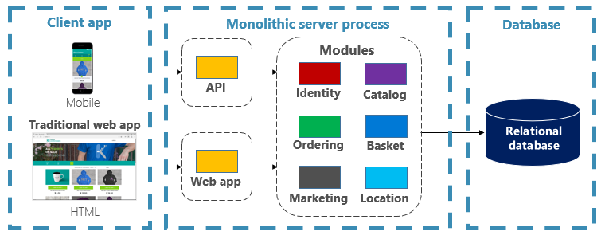

Introduction
Another day, at the office, working on "the next big thing."
Your cellphone rings. It's your friendly recruiter - the one who calls daily with exciting new opportunities.
But this time it's different: Start-up, equity, and plenty of funding.
The mention of the cloud, microservices, and cutting-edge technology pushes you over the edge.
Fast forward a few weeks and you're now a new employee in a design session architecting a major eCommerce application. You're going to compete with the leading eCommerce sites.
How will you build it?
If you follow the guidance from past 15 years, you'll most likely build the system shown in Figure 1.1.

Figure 1-1. Traditional monolithic design
You construct a large core application containing all of your domain logic. It includes modules such as Identity, Catalog, Ordering, and more. They directly communicate with each other within a single server process. The modules share a large relational database. The core exposes functionality via an HTML interface and a mobile app.
Congratulations! You just created a monolithic application.
Not all is bad. Monoliths offer some distinct advantages. For example, they're straightforward to...
- build
- test
- deploy
- troubleshoot
- vertically scale
Many successful apps that exist today were created as monoliths. The app is a hit and continues to evolve, iteration after iteration, adding more functionality.
At some point, however, you begin to feel uncomfortable. You find yourself losing control of the application. As time goes on, the feeling becomes more intense, and you eventually enter a state known as the Fear Cycle:
- The app has become so overwhelmingly complicated that no single person understands it.
- You fear making changes - each change has unintended and costly side effects.
- New features/fixes become tricky, time-consuming, and expensive to implement.
- Each release becomes as small as possible and requires a full deployment of the entire application.
- One unstable component can crash the entire system.
- New technologies and frameworks aren't an option.
- It's difficult to implement agile delivery methodologies.
- Architectural erosion sets in as the code base deteriorates with never-ending "quick fixes."
- Finally, the consultants come in and tell you to rewrite it.
Sound familiar?
Many organizations have addressed this monolithic fear cycle by adopting a cloud-native approach to building systems. Figure 1-2 shows the same system built applying cloud-native techniques and practices.

Figure 1-2. Cloud-native design
Note how the application is decomposed across a set of small isolated microservices. Each service is self-contained and encapsulates its own code, data, and dependencies. Each is deployed in a software container and managed by a container orchestrator. Instead of a large relational database, each service owns it own datastore, the type of which vary based upon the data needs. Note how some services depend on a relational database, but other on NoSQL databases. One service stores its state in a distributed cache. Note how all traffic routes through an API Gateway service that is responsible for routing traffic to the core back-end services and enforcing many cross-cutting concerns. Most importantly, the application takes full advantage of the scalability, availability, and resiliency features found in modern cloud platforms.
Cloud-native computing
Hmm... We just used the term, Cloud Native. Your first thought might be, "What exactly does that mean?" Another industry buzzword concocted by software vendors to market more stuff?"
Fortunately it's far different, and hopefully this book will help convince you.
Within a short time, cloud native has become a driving trend in the software industry. It's a new way to construct large, complex systems. The approach takes full advantage of modern software development practices, technologies, and cloud infrastructure. Cloud native changes the way you design, implement, deploy, and operationalize systems.
Unlike the continuous hype that drives our industry, cloud native is for-real. Consider the Cloud Native Computing Foundation (CNCF), a consortium of over 400 major corporations. Its charter is to make cloud-native computing ubiquitous across technology and cloud stacks. As one of the most influential open-source groups, it hosts many of the fastest-growing open source-projects in GitHub. These projects include Kubernetes, Prometheus, Helm, Envoy, and gRPC.
The CNCF fosters an ecosystem of open-source and vendor-neutrality. Following that lead, this book presents cloud-native principles, patterns, and best practices that are technology agnostic. At the same time, we discuss the services and infrastructure available in the Microsoft Azure cloud for constructing cloud-native systems.
So, what exactly is Cloud Native? Sit back, relax, and let us help you explore this new world.